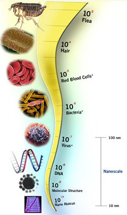

How Nanotechnology WorksWhat makes nanotechnology so special? At first glance, nanomaterials seem to be the same as regular sized materials. In reality, they aren’t the same at all. At the nanoscale, molecules and atoms behave differently than they do when they are visible to the human eye. Nanomaterial’s physical properties are different at that scale, creating the need for more research and information about nanotechnology. Nanoscale devices, such as nanobots, sensors and medical devices need some sort of energy source to power them, so research, at places like the Georgia Institute of Technology, is being done now on nanogenerators. "Nanogenerator" is the general term used for the power plants that harvest and supply energy to nanoscale devices. They replace the need for large batteries, making the devices more efficient. How nanomaterials are madeThere are currently two main approaches to creating nanomaterials. The first, the top-down approach (also called nanofabrication or microfabrication) is made of two stages. First, a single layer of material is grown on a substrate ( a supporting base) during the growth stage. Next, in the lithography transfer stage, the one dimension layer is added to another uniform layer to form a second/third dimension. The top-down approach involves cutting down larger materials to form the layers. The second main way nanomaterials are made is referred to as the bottom-up approach. With this method, atoms and molecules are manipulated one at a time to build nanomaterials. Both approaches have their flaws, however. They are both are costly, and nanofabrication is not precise all the time. The bottom-up approach is generally new, and because of the unstable nature of nanomaterials, they are sometimes hard to control and manipulate. On the other hand, if the bottom-up approach becomes more stable, it will create cheaper and more efficient products. |
|
| Copyright 2009 ® Alisa Nguyen | |